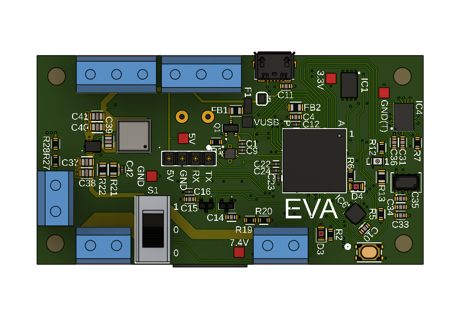

Garrett Russell
Electrical engineer working on power electronics, PCBs, and mixed-signal silicon. I like hardware that gets built, tested, and shipped — including a rocket that steers itself.
Selected work
01
MAVERIK — TVC Flight Computer
Custom STM32 flight computer (UWB, RF, 3× pyro, 5V/8A buck — 70% smaller than prototypes) and full flight software. A quaternion non-linear P²+I controller held the rocket within 5° of setpoint in flight. 1M+ views of build content.
02
4-bit 10 MS/s SAR ADC
Successive-approximation ADC for energy-critical applications at Purdue SoCET — over 60% power reduction. Strong-Arm latch comparator designed at the transistor level; SAR logic written and simulated in SystemVerilog.
03
V3 Flight Computer — Reflect Orbital
Owned trades, schematic, 8-layer EMC layout, and bring-up — 35% smaller than prior gen. Also a 15W constant-current magnetorquer driver tuned to kill EMI and a 60W isolated flyback for a custom radio.

04
High-Voltage Capacitor Charger
A Mazzilli zero-voltage-switching flyback driver for rapidly charging a 15,000 µF capacitor bank to 160 VDC — designed, built, and tested at home.

05
18650 Battery Assembler
Trained a robotic arm to assemble 18650 cells from teleoperated demonstrations with an ACT imitation-learning policy. Honorable Best AMD Hack at StarkHacks.
Experience
Reflect Orbital · Electrical Engineering Intern
May – Aug 2026
Purdue SoCET · Analog Design Engineer
Jan – May 2026
SpaceX · Automation & Controls Engineering Intern
Jan – Aug 2025
The Data Mine (Viasat) · Undergraduate Researcher
Aug – Dec 2024